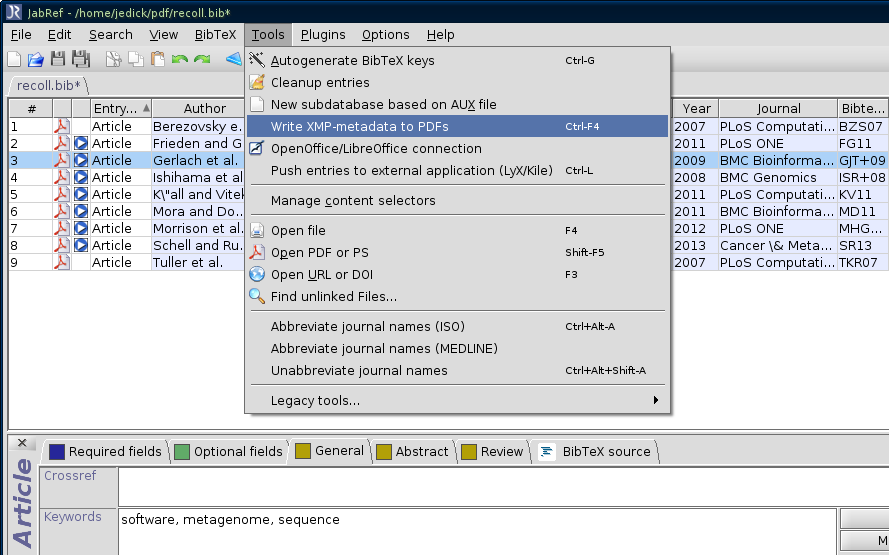
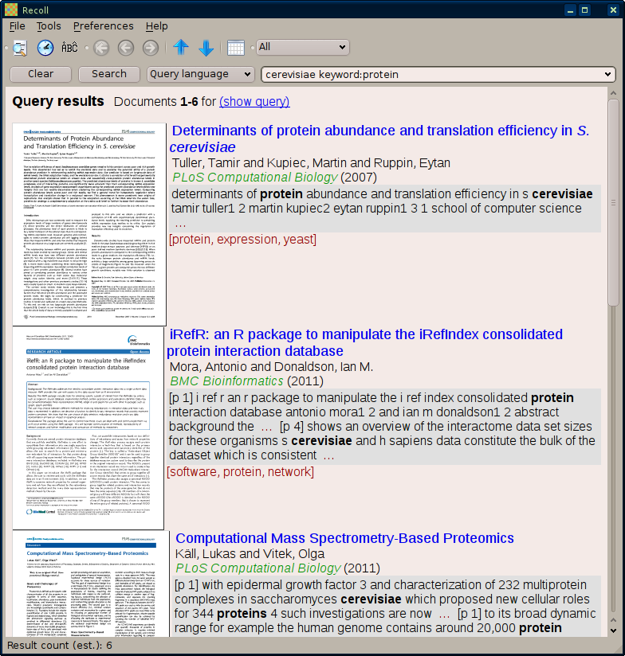

Organizing and searching a large collection of PDFs as part of a research project can be a demanding task. XMP metadata stored in a PDF, such as journal title, publication year, and user-added keywords, are often useful when searching for a publication. Here, we describe the use of a custom Recoll filter to retrieve this metadata, an indexing configuration to store it, and result paragraph format to display it. See also a related wiki entry, Generating a custom field and using it to sort results, for sorting results on PDF page count.
Bibliographic metadata can be saved in the PDF file itself. In the JabRef bibliography manager, this is done with the "Write XMP-metadata to PDFs" menu item. Note the presence of the keywords in the screenshot below; this field is a good place to tag the PDF with any words of your choosing to describe genre, topic, etc.

Let's create two fields named "year" and "journal". The prefixes starting with "XY" are extension prefixes that are added to the terms in the Xapian database (Recoll internally does not use prefixes starting with XY). Additionally, the year and journal are stored so they can be displayed in the results list. Some other types of metadata, such as title, author and keywords, are already indexed by Recoll (the default rclpdf finds them using the pdftotext command) so there is no need to add those to the [prefixes] section.
Add this text to the fields file in your Recoll configuration directory (~/.recoll/fields).
[prefixes] year = XYEAR journal = XYJOUR [stored] year = journal =
This is where the heavy lifting happens. The filter should create HTML meta elements for each of the named index fields. Below is a diff between the default rclpdf and a customized one. The PDF metadata is gathered using the pdfinfo command. Then, grep and sed are used to extract the publication year and journal name from metadata fields beginning with "bibtex:" (part of the XMP metadata written by JabRef, in XML format). That information is fed to awk, which puts together the output. The crucial part in the customized awk script is the inclusion of the HTML meta elements with the names "year" and "journal".
There is some additional processing carried out by the l2html function. This replaces some LaTeX-style accents (stored in the PDF metadata if the BibTeX file contains them) with HTML entities. Only a few examples are shown here; other LaTeX accents could be processed in a similar manner. If desired, the sed commands could be modified to give UTF-8 characters instead of the HTML entities.
The l2html function also converts the LaTeX \emph{...} (emphasized text) to HTML markup for italics, <i>...</i>. With this, and the markup="html" attribute in the HTML meta elements (given in the awk script for the title and at the end of the filter for the author), italicized text and accented characters represented by HTML entities will be shown in the results.
One other thing to note: the filter changes the "Subject" HTML meta tag (created by pdftotext) to "Abstract"; this is so that the actual abstract - of the journal article, stored in the BibTeX database and written as metadata to the PDF, and reported by pdftotext as the "Subject" - is indexed independently of the title. Otherwise, terms in the "Subject" and "title" meta tags by default get indexed together by Recoll, so a title: query would actually match words appearing in the abstract.
Grab the default rclpdf for Recoll 1.18.1 (most likely /usr/share/recoll/filters/rclpdf) then apply this patch and save the result in ~/.recoll/filters/rclpdf .
104a105,126
>
> l2html()
> {
> # redirect the stdin so the function can be used in a pipe
> cat |
> # use sed to replace some accented (LaTeX format) characters
> sed -e 's/\\"a/\ä/g' | # a umlaut
> sed -e "s/\\\'a/\á/g" | # a acute
> sed -e "s/\\\\\`a/\à/g" | # a grave
> sed -e 's/\\u{a}/\ă/g' | # a breve
> # linebreak so multiple \emph{.*} can be replaced
> sed -e 's/\\emph{/\n&/g' |
> # \emph{.*} to <i>.*</i>
> sed -e 's/\\emph{\(.*\)}/\<i\>\1\<\/i\>/g'
> }
>
> # get PDF metadata
> PDFINFO=`pdfinfo -meta "$infile" 2>/dev/null`
> # need grep -a (--text) becuase sometimes it treats input as binary
> YEAR=`echo "$PDFINFO" | grep -a bibtex:year | sed -e 's/<\/.*>//g' | sed -e 's/<.*>//g'`
> JOURNAL=`echo "$PDFINFO" | grep -a bibtex:journal | sed -e 's/<\/.*>//g' | sed -e 's/<.*>//g'`
>
107c129
< awk 'BEGIN'\
---
> awk -v year="$YEAR" -v journal="$JOURNAL" 'BEGIN'\
111a134,136
> yearmeta = "<meta name=\"year\" content=\""
> journalmeta = "<meta name=\"journal\" content=\""
> endmeta = "\">\n"
115a141,146
> if(doescape == 0 && $0 ~ /<\/head>/) {
> match($0, /<\/head>/)
> part1 = substr($0, 0, RSTART-1)
> part2 = substr($0, RSTART, length($0))
> $0 = part1 yearmeta year endmeta journalmeta journal endmeta part2
> }
133c164
< mid = "<title>" mid "</title>"
---
> mid = "<meta name=\"title\" markup=\"html\" content=\"" mid "\">"
167c198
< '
---
> ' |
168a200,203
> # replace latex with html markup
> l2html |
> # add markup="html" to author meta element
> sed -e s/\<meta\ name=\"Author\"/\<meta\ name=\"Author\"\ markup=\"html\"/g
Recoll needs to know about your custom rclpdf. Make sure the rclpdf is executable, and add this to ~/.recoll/mimeconf (replace <username> with your username).
[index] application/pdf = exec /home/<username>/.recoll/filters/rclpdf
Then index away!
Note that you can also run the rclpdf script manually, e.g. rclpdf /path/to/some.pdf, to inspect the output. If things are working correctly, the <head> consists of the HTML meta elements, and the <body> contains the text of the PDF.
Here, the result is formatted to show the title, which is a link to open the document, in blue with underlining turned off. The next two lines contain the authors, then the journal title in green italicized text followed by year (in parentheses). The keywords are listed in red after the abstract/text snippet.
Edit this using the Recoll GUI: Preferences > GUI configuration > Result List > Edit result paragraph format string.
<a href="P%N"><img src="%I" align="left"></a> <span style=font-size:1.15em><a style=text-decoration:none href="E%N">%(title)</a></span><br> %(author)<br> <font color="#009000"><i>%(journal)</i></font> (%(year)) <table bgcolor="#e0e0e0"> <tr><td><div>%A</div></td></tr> </table><font color="#900000">%K</font> <br><br>The screenshot below also has the "Highlight color for query terms" set to black; font-weight:bold; for bold, black text (instead of the blue default). There are various methods for creating the thumbnails; the ones here were made by opening the directory containing the PDFs in the Dolphin file manager (part of KDE) and selecting the Preview option.
The simple query is cerevisiae keyword:protein. This returns only PDFs that have the text "cerevisiae" and have been tagged with the "protein" keyword. The LaTeX-style formatting from the BibTeX database is displayed as HTML (note the italicized words in article title, and umlaut in author's name). Other queries could be made based on the PDF metadata, e.g. journal:plos or year:2013 .
